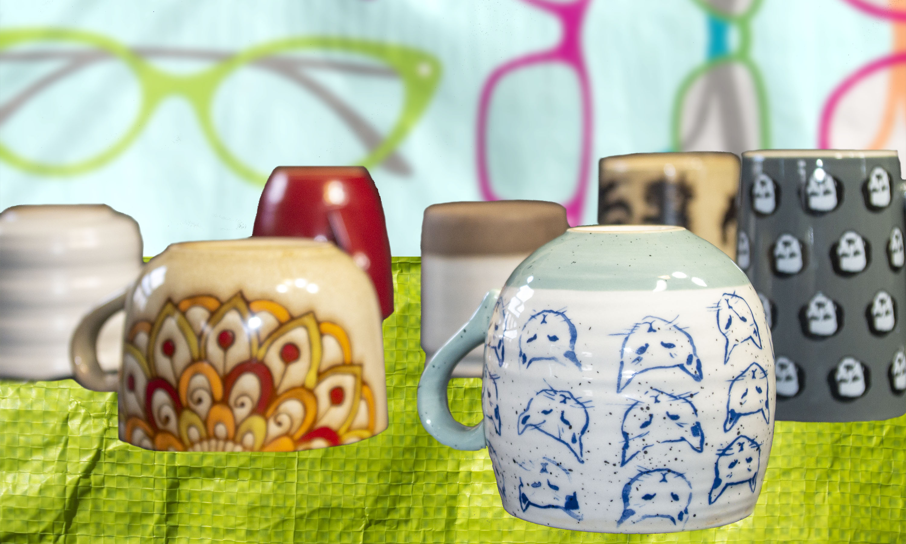

There is a group of people known as The Wanderers who roam the United Kingdoms of Bedroom and live out of small yurts they assemble and disassemble as they move around the countryside. The Wanderers are originally from Kitchen and come to Bedroom full of knowledge, energy, and warmth. They spend some time in the cities, but then, they grow empty and tired, and join their kindred. Some eventually migrate back to Kitchen, but more always come.